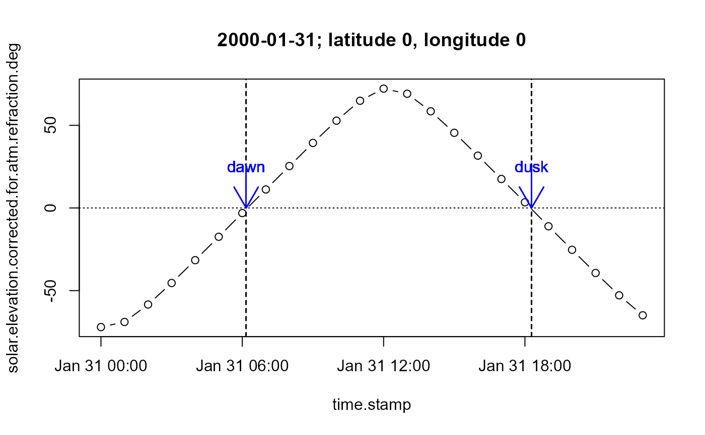

noaa.sunrise.code.RdMethods for the calculation of sunrise and sunset times based on NOAA methods.
calcNOAASunrise(
time.stamp,
latitude = 0,
longitude = 0,
local.hour.offset = 0,
output = "all"
)
cutDaylight(mydata, latitude = 0, longitude = 0, local.hour.offset = 0)
hour.offset(local, pmatch = TRUE, ignore.case = TRUE)(POSIX) A vector of date/time of
POSIX* class.
(Numerics) The latitude and
longitude of the location where the associated time.stamp
measurement was logged. (Note: latitude + to North; - to
South. longitude + to East; - to West.)
(Numeric or character) The associated
local time offset relative to GMT in hours (numeric) or a reference
term that hour.offset can convert into a numeric time
offset (character). (Note: + to East; - to West).
(Character) Either the default "all", which
returns all inputs and calculated parameters as a data.frame, or a
character vector of field/column names specifying which fields/columns
to return. See Value below for summary of calculated parameters
generated by this function.
(Data.frame). A date frame which includes the
time.stamp vector as a field/column called date.
(Character) The location (or reference) for required hour offset.
(Logicals) Supplied local handling.
pmatch applies partial (leading edge) matching of reference
local terms. ignore.case resets local to upper
case before comparing with reference local terms. Both defaults
TRUE.
calcNOAASunrise returns a data frame which, depending
on the call output value, may include the call arguments and
any of the following calculated parameters:
(Numeric) The Julian day.
(Numeric) The Julian century.
(Numeric) The geometric mean longitude of the Sun in degrees.
(Numeric) The geometric mean anomaly of the Sun in degrees.
(Numeric) The eccentricity of Earth`s orbit.
(Numeric) The estimated center for the Sun, in degrees.
(Numeric) The true longitude of the Sun, in degrees.
(Numeric) The true anamoly of the Sun, in degrees.
(Numeric) The distance to the Sun, in AUs (radial).
(Numeric) The apparent longitude of the Sun, in degrees.
(Numeric) The mean obliquity of the ecliptic, in degrees.
(Numeric) The corrected obliquity of the ecliptic, in degrees.
(Numeric) The right ascension of the Sun, in degress.
(Numeric) The declination of the Sun, in degrees.
(Numeric) TO BE CONFIRMED
(Numeric) TO BE CONFIRMED
(Numeric) TO BE CONFIRMED
(Numeric) TO BE CONFIRMED
(Numeric) The estimated sunrise time as fraction of day.
(Numeric) The estimated sunset time as fraction of day.
(Numeric) TO BE CONFIRMED
(Numeric) TO BE CONFIRMED
(Numeric) TO BE CONFIRMED
(Numeric) TO BE CONFIRMED
(Numeric) TO BE CONFIRMED
(Numeric) TO BE CONFIRMED
(Numeric) TO BE CONFIRMED
(Numeric) TO BE CONFIRMED
(Factor) A factor specifying if the time.stamp,
latitude, longitude and local.hour.offset is
estimated to be a daylight or nighttime instance.
cutDaylight is an alternative to calcNOAASunrise which
accepts the time stamp as part of a data frame and returns that data
frame with the calcNOAACalc output component daylight
as an addition field/column.
hour.offset returns the hour.offset as a numeric.
calcNOAASunrise is based on NOAA methods and calculates
a range of parameters based on the relative position of the Sun and a
receptor point of the Earth`s surface (see value below). The method is
valid for dates between 1901 and 2099.cutDaylight is a cut-down
version of the same method that was used in the codeopenair package.
hour.offset uses ref.hour.offset as a look-up
table to match supplied local terms and return
hour.offset values for use in calcNOAASunrise
or cutDaylight.
The NOAA Sunrise methods were originally recoded for R as part
of work on the NERC penair project:
http://www.openair-project.org/.
cutDaylight is an alternative version of the function. It is
highly similar to code used as part of the function cutData in
the package openair to provide daylight conditioning for
many plot types within that package.
Character handling for local.hour.offset is by
hour.offset and ref.hour.offset.
Methods based on: http://www.srrb.noaa.gov/highlights/sunrise/sunrise.html
#example 1
#calcNOAASunrise
d <- seq(ISOdatetime(2000,1,31,0,0,0), by = "hour", length.out = 24)
ans <- calcNOAASunrise(d)
#solar elevation vs hour of day at (0,0) on 2000-01-31
plot(solar.elevation.corrected.for.atm.refraction.deg~time.stamp,
main="2000-01-31; latitude 0, longitude 0",
data=ans, type="b")
#anotate further, add dusk and dawn
#NB: sunrise and sunset are given as fractions of day
dusk <- ISOdatetime(2000,1,31,0,0,0) + (ans$sunset.time.lst*86400)
dawn <- ISOdatetime(2000,1,31,0,0,0) + (ans$sunrise.time.lst*86400)
abline(v=dusk, lty=2)
abline(v=dawn, lty=2)
abline(h=0, lty=3)
arrows(dusk, 25, dusk, 0, col="blue")
text(dusk, 25, "dusk", col="blue")
arrows(dawn, 25, dawn, 0, col="blue")
text(dawn, 25, "dawn", col="blue")
